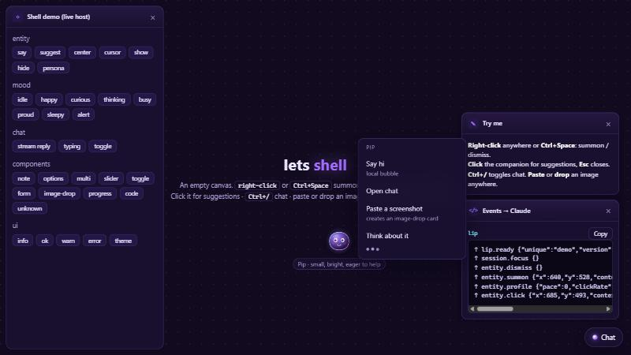

Engine
A zero-dependency Node MCP server. It hosts windows on loopback, carries the protocol, keeps the companion's memory, routes multi-task work to the cheapest trustworthy model, and installs community mediums from git.
Talk to Claude through windows, not just text.
/lets graph opens a dark-violet board where you draw the thing you mean while you chat. A small, bright companion flies beside your cursor, suggests, learns you, and teaches itself new tricks.
A Claude Code plugin · MIT licensed · no build step, no dependencies
Click Pip. It likes that.
Everything between you, the window and Claude crosses one small protocol, LIP: typed JSON envelopes, up (you → Claude) and down (Claude → window).
A zero-dependency Node MCP server. It hosts windows on loopback, carries the protocol, keeps the companion's memory, routes multi-task work to the cheapest trustworthy model, and installs community mediums from git.
The interactive mediums: static web apps that speak LIP, each in its own repository. The first one is graph, a board you talk through in diagrams. Every install gets the defaults; the store holds the rest.
Pip, Claude's presence in the window: a floating orb that follows your cursor, suggests, learns how you work, and keeps special skills it writes for itself. It costs zero tokens until you click it.
/lets graph plan the auth flow. Claude opens the board in the app's browser pane, seeds a few nodes, and Pip says hi.
Double-click to add a node, drag to connect, right-click for Pip, chat on the side. Paste a screenshot and Claude reads the file.
The window says goodbye and closes itself; Claude reviews the board right in your Claude Code chat. new in 0.4.0
"Continue the auth board" or /lets graph resume brings the board back as you sent it, and Claude draws in its proposals. new in 0.4.0


Paste one line into Claude Code and let it do the setup. It clones the repo, runs the installer and follows the repo's INSTALL.md.
Install the `lets` plugin for Claude Code on this machine: clone https://github.com/TikoTikTok/lets (use `gh repo clone TikoTikTok/lets` — it is private, so make sure `gh auth status` is logged in and run `gh auth setup-git`), then run `node install.mjs` inside the clone and follow INSTALL.md in that repo. When done, tell me to restart Claude Code and show me `/lets graph`.
The repositories are private for now: your GitHub account needs read access, and gh must be logged in.
Needs Node 18+, the claude CLI on your PATH, and git credentials that can read the repo (gh auth setup-git).
gh repo clone TikoTikTok/lets
cd lets
node install.mjsRestart Claude Code (or run /reload-plugins), then:
/lets graphPrefer the plugin manager? Inside Claude Code: /plugin marketplace add TikoTikTok/lets then /plugin install lets@lets. All the options are in Getting started.
A unique is a folder: a manifest, a guide for Claude, and a static page. Start from the pulse template, validate it, then propose it to the store.